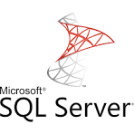

La decription des principaux SGBD
Oracle
SQL server
Maria DB
Post greSQL
Mango DB
Tableau récapitulatif
Oracle
Oracle (Oracle Corporation) est une entreprise américaine créée en 1977 par Larry Ellison. Ses produits phares sont le système de gestion de base de données Oracle Database, le serveur d'applications Oracle WebLogic Server, le progiciel de gestion intégré Oracle E-Business Suite et l'offre de cloud computing Oracle Cloud Infrastructure.
- Principales fonctionnalités
- Support multi-modèle : Prise en charge des données relationnelles, JSON, XML et objets.
- Performances élevées : Optimisation des requêtes et gestion des grands volumes de données
- Sécurité avancée : Audit, chiffrement des données, et gestion des privilèges.L
- support avancé pour les triggers, procédures stockées, et partitionnement.
- Forces
- Très riche en fonctionnalités
- Sauvegarde a chaud tres fiable pour les systèmes critiques
- Pérennité de l'éditeur : avec plus de 40% de part de marché, ce n'est pas demain qu'Oracle disparaîtra
- Faiblesse
- complexe à administrer
- Très coûteux, avec des frais de licence élevés
- Porosité entre les schémas = difficile de faire cohabiter de nombreuses applications sans devoir créer plusieurs instances
- Ressources matérielles : Exigeant en termes de ressources matérielles pour de bonnes performances.
Cliquer ici pour aller sur la page web d'Oracle
Retour vers le haut

SQL server
Microsoft SQL Server est un système de gestion de base de données (SGBD) en langage SQL incorporant entre autres un SGBDR (SGBD relationnel ») développé et commercialisé par la société Microsoft.
- Principales fonctionnalités
- Intégration avec Windows : Connexion aisée à Active Directory et autres outils Windows
- Stockage et manipulation JSON : Support JSON natif pour les applications modernes.
- Performances et scalabilité : Indexation en mémoire et architecture optimisée pour les grandes charges
- Sécurité : Chiffrement des données, audit intégré, et protection contre les menaces en temps réel.
- Forces
- Plus facile à utiliser avec une interface conviviale (SQL Server Management Studio)
- Fonction d'audit évolué
- Facilité d'intégration : Intégration native avec les produits Microsoft (Power BI, Azure, etc.)/li>
- Faiblesse
- Coût des licences
- Pas de prise en charge du LDAP
- Dépendance à l'écosystème Microsoft : Moins adapté si les systèmes existants ne sont pas sous Windows.
Cliquer ici pour aller sur la page web SQLServer
Retour vers le haut
Maria DB
MariaDB est un système de gestion de base de données édité sous licence GPL. Il s'agit d'un embranchement communautaire de MySQL : la gouvernance du projet est assurée par la fondation MariaDB5, et sa maintenance par la société Monty Program AB, créateur du projet6. Cette gouvernance confère au logiciel l'assurance de rester libre.
- Principales fonctionnalités
- Compatible avec MySQL mais offre des fonctionnalités supplémentaires comme les moteurs de stockage alternatifs (ex : Aria)
- Administration simplifiée avec de bons outils graphiques
- Optimisation des requêtes complexes et gestion des index
- Forces
- Open Source : Gratuit, avec une communauté active qui propose des mises à jour fréquente
- Facile à prendre en main
- Multi-plateforme Supporte Windows,Linux et macOS
- Faiblesse
- Pas de sauvegarde consistante à chaud
- Manque de robustesse avec de fortes volumétrie
- Assez peu de richesse fonctionnelle
Cliquer ici pour aller sur la page web MariaDB
Retour vers le haut
Mongo DB
MongoDB (de l'anglais humongous qui peut être traduit par « énorme ») est un système de gestion de base de données orienté documents, répartissable sur un nombre quelconque d'ordinateurs et ne nécessitant pas de schéma prédéfini des données. Il est écrit en C++. Il fait partie de la mouvance NoSQL.
- Principales fonctionnalités
- Flexible grâce à son modèle de données non relationnel
- Supporte le JSON natif et les fonctionnalités géospatiales
- Simple à déployer et à configurer.
- Forces
- Open Source :Gratuit
- Scalabilité horizontale, flexibilité
- Multi-plateforme :Compatible avec Linux, Windows et macOS
- Faiblesse
- Consommation de ressources : Peut nécessiter plus de mémoire et de stockage que les SGBD relationnels.
- Transactions limitées
- Langage de requête non SQL : Courbe d'apprentissage pour ceux habitués à SQL classique
Cliquer ici pour aller sur la page web MongoDB
Retour vers le haut
PostgreSQL
PostgreSQL est un système de gestion de base de données relationnelle et objet (SGBDRO). C'est un outil libre disponible selon les termes d'une licence de type BSD.
- Principales fonctionnalités
- Très extensible avec de nombreux modules et support natif des types JSON, hstore, et données géospatiales avec PostGIS
- Moins intuitif que SQL Server mais offre de nombreux outils open-source pour l'administration.
- Très riche fonctionnellement, notions d'héritage de tables, multitude de modules
- Forces
- Open Source :Gratuit
- standards SQL
- Multi-plateforme :Compatible avec Linux, Windows et macOS
- Faiblesse
- Sauvegardes peu évoluées
- scalabilité limitée
- Complexité de configuration
Cliquer ici pour aller sur la page web PostgreSQL
Retour vers le haut
| SGBD |
Principales fonctionnalités |
Forces |
Faiblesse |
| Oracle |
Performances élevées : Optimisation des requêtes et gestion des grands volumes de données |
Performances, sécurité, multi-modèle |
Très coûteux, complexité |
| SQLServer |
BI, intégration Microsoft, facilité d'utilisation |
Fonction d'audit évolué |
Coût des licences |
| MariaDB |
dministration simplifiée avec de bons outils graphiques |
Open Source |
Pas de sauvegarde consistante à chaud |
| MongoDB |
Flexible grâce à son modèle de données non relationnel |
Open Source |
Transactions limitées, consommation mémoire |
| PostgreSQL |
Très extensible avec de nombreux modules et support natif des types JSON, hstore, et données géospatiales avec PostGIS |
standards SQL,Open Source |
scalabilité limitée |
Retour vers le haut